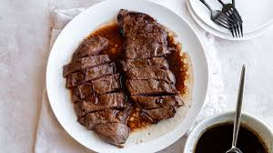

Best Steak Marinade

Description:
This easy steak marinade is truly the best you'll ever try. Made with convenient ingredients that may already be
in your pantry, you'll come back to this steak marinade recipe time after time.Marinate the steak in the
refrigerator for at least two hours. However, for even more flavorful and juicy results, you can marinate the
steak for up to eight hours.
ingredients:
- ¼ cup olive oil
- ¼ cup balsamic vinegar
- ¼ cup Worcestershire sauce
- ¼ cup soy sauce
- 2 teaspoons Dijon mustard
- 2 teaspoons minced garlic
- 1 pinch salt and pepper to taste
Steps:
- Mix olive oil, balsamic vinegar, Worcestershire sauce, soy sauce, Dijon mustard, and garlic in a small bowl. Season with salt and pepper.